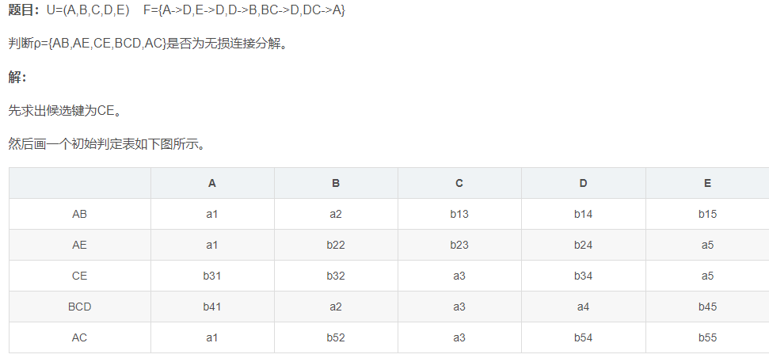

Database
范式分解
3NF:
求最小函数依赖F
不在F中的属性单独拿出来做一个关系
其他的左右合起来就行
BCNF
求最新函数依赖F
求候选键
分析F中每个函数依赖
如果不符合BC范式（左边存在非候选键的）
分解成2个关系
左右合并作为一个分解。然后第二个关系要去掉第一个关系右边项
判断无损分解
画表。
一次分析每个依赖里面 a__i的。然后把对应右边关系的行，干成a_k.某行全a后就是无损分解
事务
ACID特性(原子、一致、隔离、持久性)
并发控制
保证正确调度、事务的隔离性、数据库一致性
潜在的不一致性
丢失修改
一个事务读后，另一个事务修改并写回了，然后之前那个事务又把修改过后的数据写进去（读后写）
读脏数据
读一个修改过的结果。。之后那个事务rollback了
不可重复读
1读取数据后，2更新，1无法再现结果
1类：修改后，再读不同值
2类：2删除了记录，再次读，1发现读不到
3类：2添加了记录，再次读，发现多了一些记录
2、3也称为幻影现象
锁
X、S
X是排他 S是共享
X优先级最高。不能再加任何锁，直到释放
S只能+S锁 （有s锁不能加X锁，所以也叫读锁）
3级锁协议
1级
读取前，加X锁，事务完成后释放
（读数据不加锁，所以不能避免不可重复读和脏数据）
2级
1级+读取前先加S锁。读完就释放S
（可以防止丢失修改，脏数据，但是不能防止不可重复读）
3级
1级+加S，直到事务结束释放
全部能防
活锁
一个事务总是不能在一个数据项上加锁。-》采用先来先服务
死锁
等待另一个锁对象
都是死锁预防
方法：一次封锁（一次把需要锁的锁上，破坏占有并等待），顺序封锁（破除循环等待）
DBMS使用更多的是诊断并解除
检测并发调度正确性
可串行性是并行事务正确性的唯一准则
（凼且晋档结果与某一次序串行地执行结果相同）
2段锁协议
在读写前先加锁
在释放锁后不能再加任何锁
所有遵循两段锁的事物并行结果一定是正确的
可能死锁
一次封锁法满足2段锁协议
遵循3级封锁必然遵循2段锁
意向锁
锁强度 X>S+IX>S=IX>IS
IS与X不共存
IX与只与IS IX不互斥
封锁方法： 申请：自上而下 释放：自下而上
事务恢复
原则 已经做完的redo,做到一半的undo.redo从上到下扫描。undo从下到上扫描